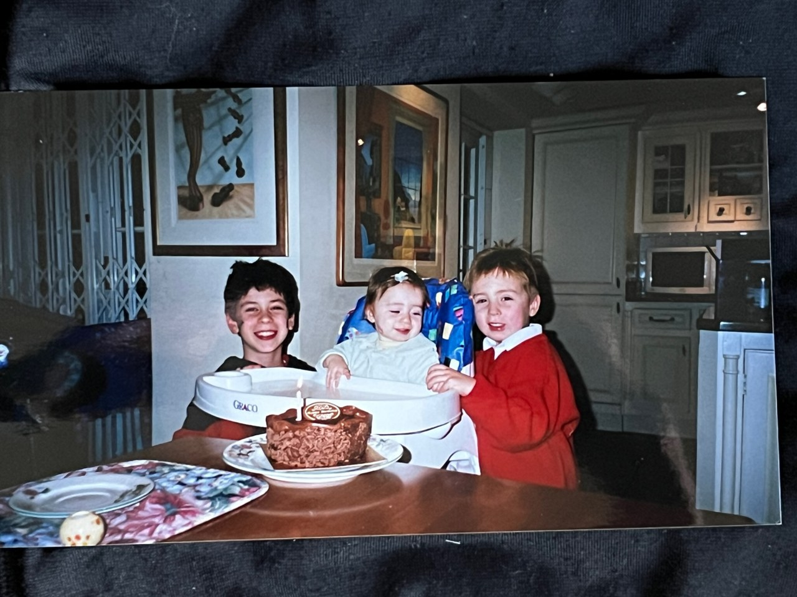
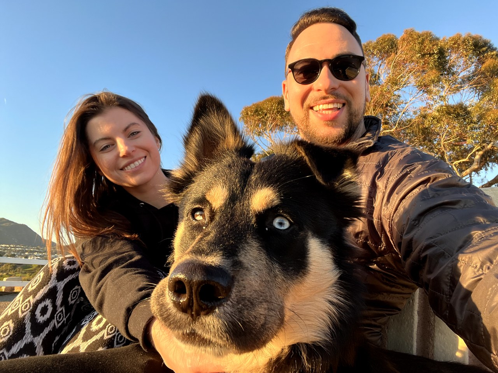
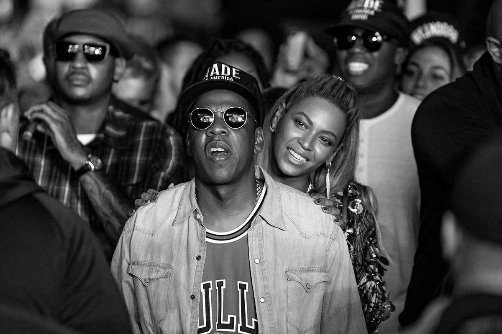
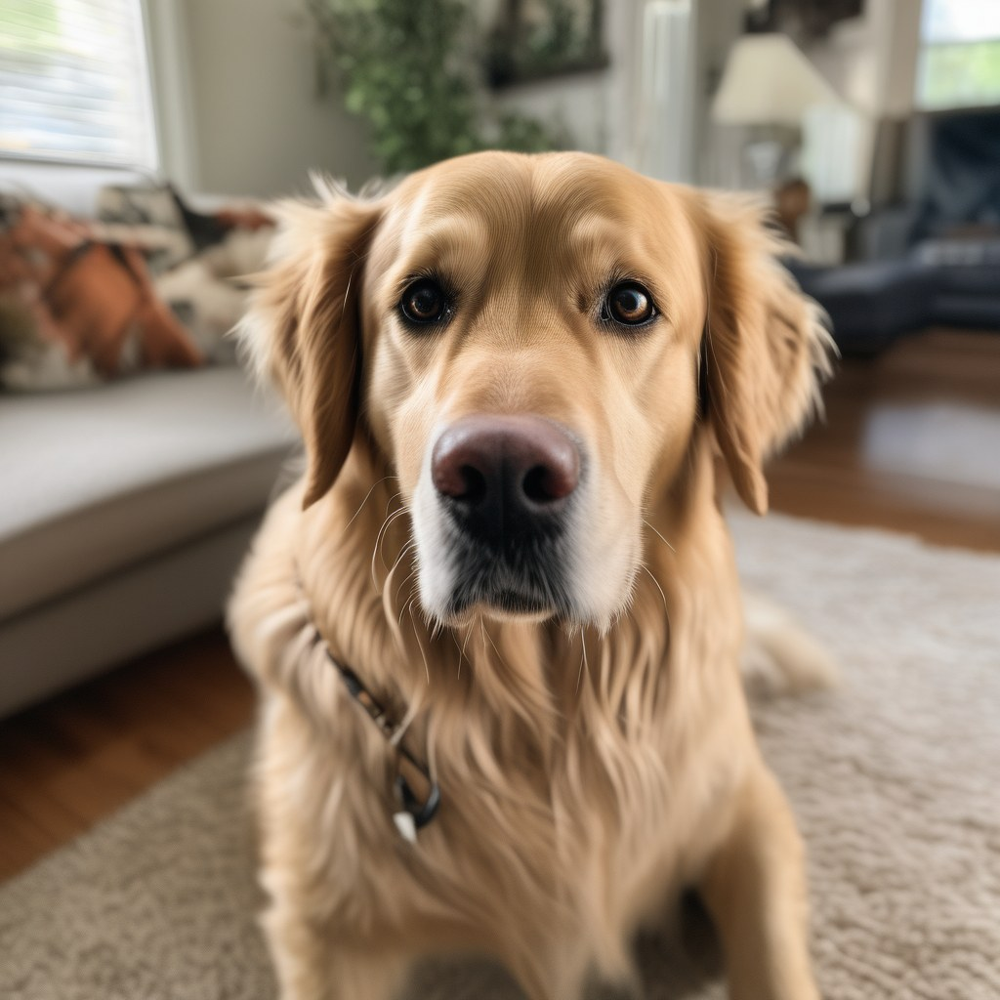
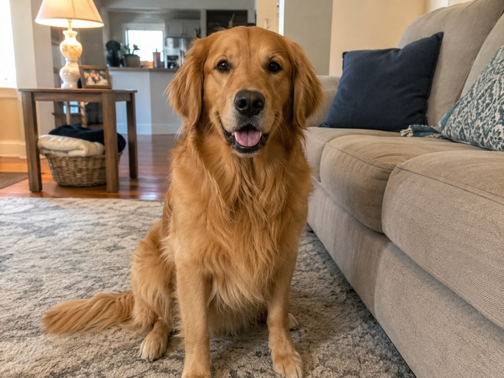

AI
Designing
with
Agenda
01
About me
02
AI design slop
03
Solutions
04
Case study
05
Extras
About me



Use tech to
build things
Real capture · Pizza Hut app · Gallery / Creations / Day 46
8 years later...
Visual · one wide capture
Capture
Capture
Capture
Capture
Capture
Use tech to
build things and
solve problems
News supercut
about AI
Use AI to
build things and
solve problems?
AI design slop
Visual · a slop specimen
Text
Images

2023
2026“a golden retriever in a living room”
Videos
Real capture · 2023 clip
Real capture · 2026 clip
“will smith eating spaghetti”